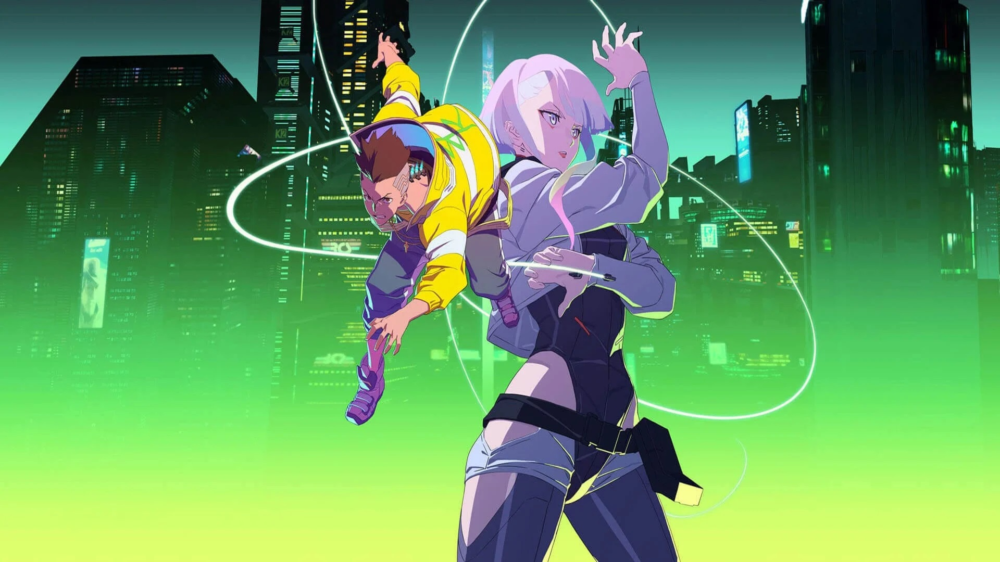

About David Martinez
David Martinez is the protagonist of Cyberpunk: Edgerunners. He became a mercenary and a member of Maine's edgerunner crew in 2076, when he was involved in a series of harrowing events that resulted in him attaining the status of a Night City legend
David's characteristics
- He has an ability to slow time because of a cyberware called "Sandevistan"
- He has an ability to launch projectile because of a cyberware called "Projectile Launch System"
- He has a durable skin because of the cyberware "Subdermal Armor"

David's friends
- Daniel Manalo from SlamDunk
- Christopher Manucot from Noragami
- Lexter Manuel from Bluelock